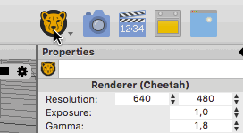
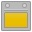
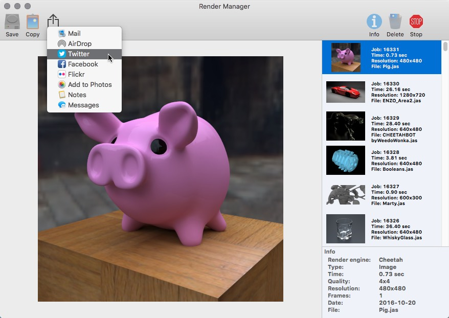

Renderer
A render engine takes all the available informations from the 3D scene (objects, materials and lights) and computes a photorealistic 2D image or movie. The 3D to 2D conversions is also called rendering. Cheetah3D currently offers two built in render engines:
| The Cheetah render engine is a recursive raytracer which uses irradiance caching and photon maps to for computing global illumination. It was introduced with Cheetah3D 1.5 and is serving as Cheetah3Ds default renderer since more than a decade. | |
| Falcon is Cheetah3Ds new render engine which was introduced with Cheetah3D 7.0. It's an unbiased path tracer. The future development will mainly focus on the new Falcon rendering engine. |
Selecting the render engineTo change the render engine either use the menu command "Render->Renderer" or the Renderer toolbar icon (see screenshot below).
Click on the render preferences icon and hold the mouse button pressed to change the render engine.
Rendering a image/movieTo start a rendering job you can either use the menu command "Render->Render" or you can use the following toolbar icons:
| Starts a still image rendering job. | |
| Starts an animation rendering job. | |
|  | Starts a baking rendering job. |
Render ManagerThe Render Manager organizes all your rendering jobs in one window. For here you can stop or delete renderings jobs or get information about the current status of the rendering. Once the rendering is finished you can save your images/movies to disc, copy it to the pasteboard or share it with others via social media.
